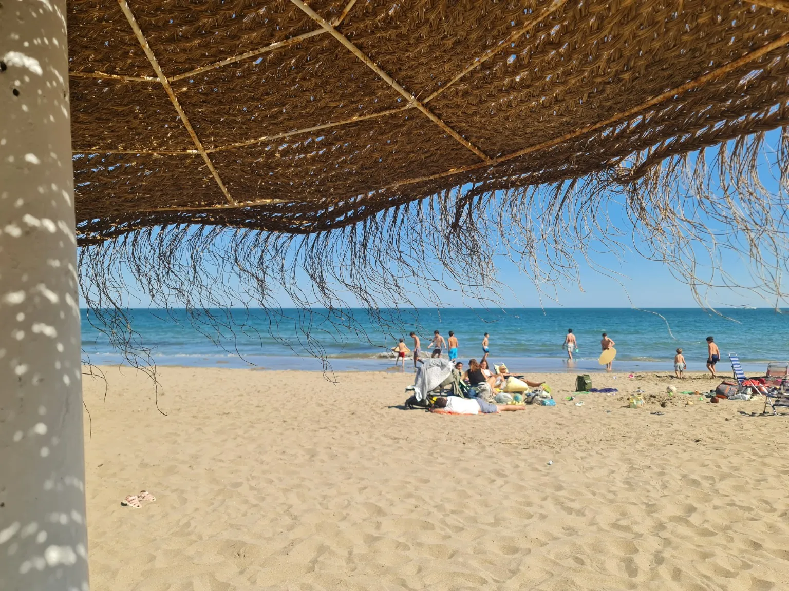
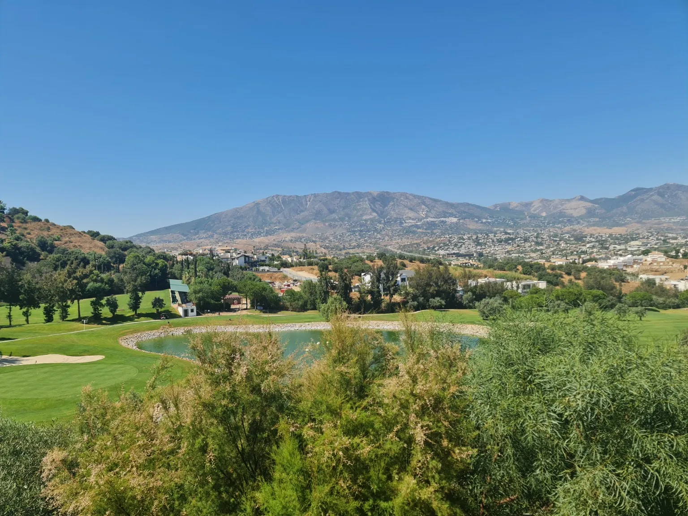
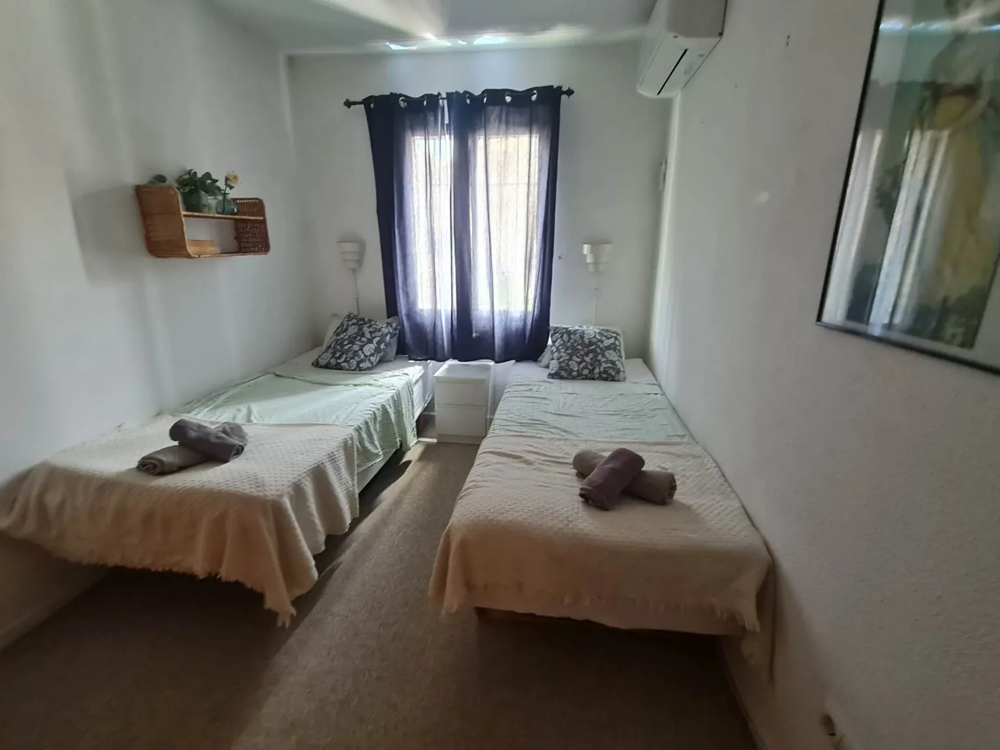

Et rigtigt hjem
Stue, køkken, spiseområder og soveværelser, der fungerer fra morgenkaffe til middag og en god nats søvn.
Cerros del Águila · Mijas Costa
Et skandinavisk indrettet og praktisk feriehus med flere terrasser, fælles pool og en god placering som base for Costa del Sol.
Casa Amar
Casa Amar er skandinavisk indrettet: lyst, enkelt og nemt at bo i. Det er et personligt hjem med plads til at lave mad, være sammen, trække sig tilbage og komme godt hjem efter en dag ude.
Huset ligger i den rolige urbanisation Cerros del Águila. Her får I flere terrasser, grønne omgivelser og fælles pool – samtidig med at strand, byer, golf, cykelruter og udflugter er inden for rækkevidde.
Huset først
Stue, køkken, terrasser og tagterrasse er de steder, ferien faktisk foregår.
Stue, køkken, spiseområder og soveværelser, der fungerer fra morgenkaffe til middag og en god nats søvn.
Terrasser, udsigt og tagterrasse – fra solrige pauser til lange aftener med projektor under åben himmel.
Pool og fællesområder, park, legeplads, strand, golf og andre muligheder inden for rækkevidde.
Tagterrassen
Tagterrassen kan bruges forskelligt gennem dagen: til morgenkaffe, ro, udsigten, solnedgangen – og om aftenen som udendørs biograf.
Sofa, loungestol og forskellige steder at sidde – alt efter sol, skygge og humør.
Et godt sted til en bog, en samtale eller bare nogle minutter uden planer.
Om aftenen
Når solen er gået ned, kan projektoren sættes op. Så bliver tagterrassen et ekstra opholdsrum – med sofa, aftenluft og plads til at blive siddende lidt længere.
Solnedgangen er ofte det tidspunkt, hvor alle naturligt samles igen.
Planter og blomster giver terrassen liv og forskellige stemninger gennem året.
Møbler, planter og indretning kan løbende ændre sig, men tagterrassens opholdszoner og udsigten er en fast del af Casa Amar.
En god base
Nogle bruger mest tid ved huset og poolen. Andre tager afsted hver morgen. Nogle rejser som par, andre med familien eller venner. Casa Amar fungerer, fordi huset giver en behagelig og praktisk ramme – uden at bestemme, hvordan ferien skal se ud.
Beliggenheden
Casa Amar ligger i Cerros del Águila – lidt væk fra den travleste del af kysten, men tæt nok på strand, indkøb, golf og udflugter til, at huset fungerer som en praktisk base.


En god base
Kysten, promenaden og restauranterne i Fuengirola ligger tæt nok på til både korte ture og hele stranddage.
Ferier ser forskellige ud
Tre soveværelser, pool i sæson og mulighed for at kombinere hjemmedage med strand og udflugter.
En god ramme for dage ude og aftener hjemme.
Området giver mange valgmuligheder og huset giver et roligt sted at vende tilbage til.
Relevant især i forår, efterår og vinter.
Huset er praktisk nok til et ferieophold på op til to måneder.
Tre soveværelser gør det muligt, at flere kan være en del af ferien.
Et nærmere kig
Rigtige billeder af stue, køkken, spiseområde og soveværelser – uden billeder fra stranden eller området.

Hele året
Cykling, golf og behagelige temperaturer.
Pool, strand og lange aftener på terrasserne.
Roligere tempo og aktive dage.
Milde dage og en måned væk fra mørket.
Casa Amar
Næste ferie behøver ikke ligne den forrige. Casa Amar kan være base for strand, familie, golf, cykling, ro eller en måned i solen – med det samme hjem at komme tilbage til.